ระบบคิว  ใช้ในการจำลองระบบคอมพิวเตอร์ แบบตัวประมวลผลหลายตัว (Multiprocessor Systems) หรืออุปกรณ์ที่มีเครื่องบริการ (Server) ชนิดเดียวกันหลายเครื่อง โดยที่งานที่รอการใช้งานระบบรออยู่ในคิวเดียวกัน แบบจำลองของคิว
ใช้ในการจำลองระบบคอมพิวเตอร์ แบบตัวประมวลผลหลายตัว (Multiprocessor Systems) หรืออุปกรณ์ที่มีเครื่องบริการ (Server) ชนิดเดียวกันหลายเครื่อง โดยที่งานที่รอการใช้งานระบบรออยู่ในคิวเดียวกัน แบบจำลองของคิว  แสดงในรูป 5.1
แสดงในรูป 5.1
สมมุติให้ระบบประกอบด้วยเครื่องบริการจำนวน  เครื่อง และแต่ละเครื่องมีอัตราการบริการเท่ากับ
เครื่อง และแต่ละเครื่องมีอัตราการบริการเท่ากับ  , อัตราการเข้าใช้ระบบ (Arrival Rate) เท่ากับ
, อัตราการเข้าใช้ระบบ (Arrival Rate) เท่ากับ  งานต่อหน่วยเวลา
งานต่อหน่วยเวลา
ถ้ามีเครื่องบริการเครื่องใดเครื่องหนึ่งว่างอยู่ งานที่เข้ามาใช้ระบบจะได้รับบริการทันที ถ้าเครื่องบริการเต็มทั้งหมด  เครื่อง งานที่เข้ามาจะรอรับบริการอยู่ในคิว สถานะของระบบแสดงโดยจำนวนงานที่อยู่ในคิว แผนภาพแสดงการเปลี่ยนสถานะของคิว แสดงในรูป 5.2
เครื่อง งานที่เข้ามาจะรอรับบริการอยู่ในคิว สถานะของระบบแสดงโดยจำนวนงานที่อยู่ในคิว แผนภาพแสดงการเปลี่ยนสถานะของคิว แสดงในรูป 5.2
จากกระบวนการเกิด-ดับของคิว  จะได้อัตราการเข้าใชัระบบและอัตราการบริการดังต่อไปนี้
จะได้อัตราการเข้าใชัระบบและอัตราการบริการดังต่อไปนี้
| (5.1) |
จากทฤษฎี 4.1 ความน่าจะเป็นที่มีงาน  งานในระบบเท่ากับ
งานในระบบเท่ากับ
| (5.2) |
ในรูปของ Traffic Intensity 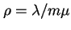 จะได้
 |
(5.3) |
จากความน่าจะเป็นขั้นต้น เราสามารถพิสูจน์หาค่าพารามิเตอร์ได้ดังต่อไปนี้
ความน่าจะเป็นที่ไม่มีงานอยู่ในระบบ
| 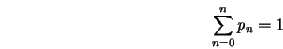 | (5.4) |
จากการแตกสมการข้างบนจะได้
| 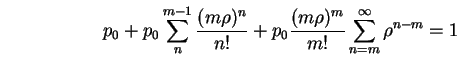 | (5.5) |
หรือย้ายข้างเท่ากับ
| 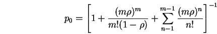 | (5.6) |
ความน่าจะเป็นที่งานที่เข้าในระบบแล้วจะต้องรออยู่ในคิว ใช้ตัวย่อ และสามารถแสดงได้โดย
| 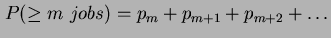 | |||
| 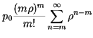 | |||
| 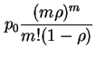 | (5.7) |
สมการขั้นต้นเรียกว่าสูตรของ Erlang's C ความน่าจะเป็นดังกล่าวมีความสำคัญต่อการคำนวณ  คิว การคำนวณ จะช่วยให้สามารถแสดงความสัมพันธ์ระหว่างพารามิเตอร์ต่างๆ ในคิว
คิว การคำนวณ จะช่วยให้สามารถแสดงความสัมพันธ์ระหว่างพารามิเตอร์ต่างๆ ในคิว  ให้อยู่ในรูปที่ง่ายขึ้น
ให้อยู่ในรูปที่ง่ายขึ้น
ในกรณีที่มีเครื่องบริการเพียงเครื่องเดียว ความน่าจะเป็นที่งานจะต้องรอในคิว จะเท่ากับความน่าจะเป็นที่เครื่องบริการไม่ว่าง
ยังเป็นพารามิเตอร์ที่สำคัญในการวิเคราะห์ระบบจริงอีกด้วย เนื่องจากความน่าจะเป็นที่งานเข้ามาในระบบแล้วจะต้องรอในคิว มีความสำคัญต่อคุณภาพการบริการของระบบ
จากสมการที่แสดงความสัมพันธ์  จำนวนงานเฉลี่ยในที่รออยู่ในคิวสามารถคำนวณได้จาก
จำนวนงานเฉลี่ยในที่รออยู่ในคิวสามารถคำนวณได้จาก
| 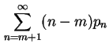 | |||
| 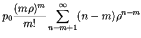 | |||
| 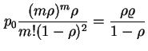 | (5.8) |
และจำนวนงานเฉลี่ยในที่กำลังรับบริการอยู่เท่ากับ
| 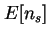 | 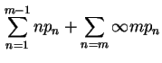 | ||
| 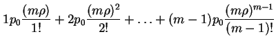 | |||
| 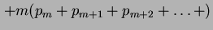 | |||
| 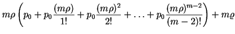 | |||
| 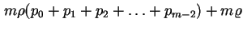 | |||
| 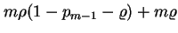 | |||
| 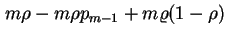 | |||
| (5.9) |
จำนวนงานเฉลี่ยในระบบคือ
| 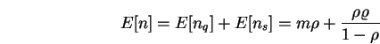 | (5.10) |
ค่าความแปรปรวนของจำนวนงานเฉลี่ยในระบบ และ ค่าความแปรปรวนของจำนวนงานเฉลี่ยที่รอในอยู่คิว สามารถคำนวณได้จาก
![\begin{displaymath}
Var[n] = m\rho + \rho\varrho\left[\frac{1+\rho-\rho\varrho}{(1-\rho)^2} + m\right]
\end{displaymath}](img219.png) |
(5.11) |
| 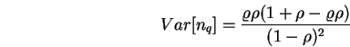 | (5.12) |
จากการเฝ้าสังเกตการทำงานของระบบเป็นเวลานานมาก  วินาที จำนวนงานที่เข้ามาในระบบ และได้รับการบริการจะเท่ากับ 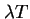
วินาที จำนวนงานที่เข้ามาในระบบ และได้รับการบริการจะเท่ากับ 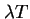
Busytime ของเครื่องบริการ  เครื่องที่บริการงานกลุ่มดังกล่าวเท่ากับ 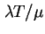 เพราะฉะนั้น ค่าภาระงาน (Utilization) ของเครื่องบริการแต่ละเครื่องจะเท่ากับ
เครื่องที่บริการงานกลุ่มดังกล่าวเท่ากับ 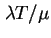 เพราะฉะนั้น ค่าภาระงาน (Utilization) ของเครื่องบริการแต่ละเครื่องจะเท่ากับ
| 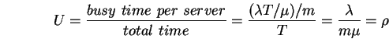 | (5.13) |
ค่าเฉลี่ยของเวลาตอบสนองหาโดยใช้กฎของ Little
| 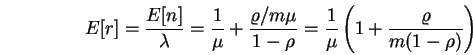 | (5.14) |
โดยวิธีเดียวกัน เราสามารถหาเวลาที่รออยู่ในคิวเท่ากับ
| 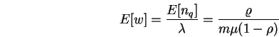 | (5.15) |
ฟังก์ชั่นการกระจายของความน่าจะเป็นของเวลาตอบสนองสามารถแสดงได้โดย
| 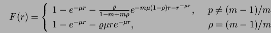 |
สังเกตว่าเวลาตอบสนองไม่ได้มีการกระจายแบบ Exponential นอกจากในกรณี
 เช่นเดียวกัน ฟังก์ชั่นการกระจายของความน่าจะเป็นของเวลารอการบริการสามารถแสดงได้โดย
เช่นเดียวกัน ฟังก์ชั่นการกระจายของความน่าจะเป็นของเวลารอการบริการสามารถแสดงได้โดย
| 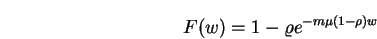 | (5.16) |
เนื่องจากเป็นการกระจายแบบ Exponential เราสามารถหา q-Percentile ได้จาก
| 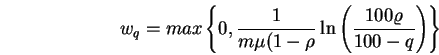 | (5.17) |
ถ้าความน่าจะเป็นที่ต้องรอการบริการ มีค่าน้อยกว่า เทอมหลังจะมีค่าเป็นลบ ค่าที่ถูกต้องจึงเป็นศูนย์